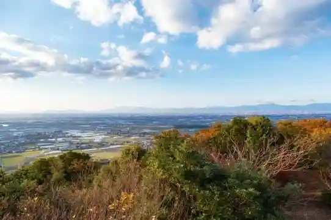
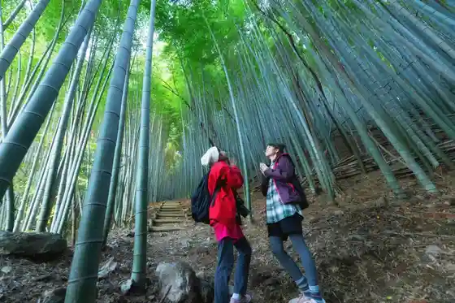

Kiyomizudera Hombo Garden
Miyama, Fukuoka · 0944-63-3955 · Official / source link
(Miyama Shimizu Yama Kosu) Miyama no Aki Mankitsu Orure
Miyama, Fukuoka · 0944-64-1523 · Official / source link

Roadside Station Miyama (Miyama Tourism Association)
Miyama, Fukuoka · 0944-67-6477 · Official / source link
Takada no Shi Yama Park
Miyama, Fukuoka · 0944-22-4886 · Official / source link
Kami Yadoru Chikurin (Kyushu Orure Miyama Shimizu Yama Kosu)
Miyama, Fukuoka · 0944-64-1523 · Official / source link

Onimaru
Miyama, Fukuoka · 0944-63-5353 · Official / source link
Nagata Kosen Ba
Miyama, Fukuoka · 0944-64-1523 · Official / source link
Kiyomizudera (Miyama)
Miyama, Fukuoka · 0944-63-7625 · Official / source link
Taka Shokuhinkogyo
Miyama, Fukuoka · 0944-62-2161 · Official / source link
Kikumi Nin Shuzo
Miyama, Fukuoka · 0944-62-3001 · Official / source link
Umeno Ie History Museum
Miyama, Fukuoka · 0944-62-2242 · Official / source link
O Makiyama Campground
Miyama, Fukuoka · 0944-64-1532 · Official / source link
Shimizu Yama Botan Sono (Miyama)
Miyama, Fukuoka · 0944-62-6161 · Official / source link
Nagata no Dai Icho
Miyama, Fukuoka · 0944-63-3955 · Official / source link
Shimizu Sanso (Miyama)
Miyama, Fukuoka · 0944-63-3388 · Official / source link
Yanagi Ya Shokudo
Miyama, Fukuoka · 0944-22-4599 · Official / source link
Kiyomizudera Sanjunoto
Miyama, Fukuoka · 0944-63-7625 · Official / source link
Chocolate House Cocoro
Miyama, Fukuoka · 0944-63-3006 · Official / source link